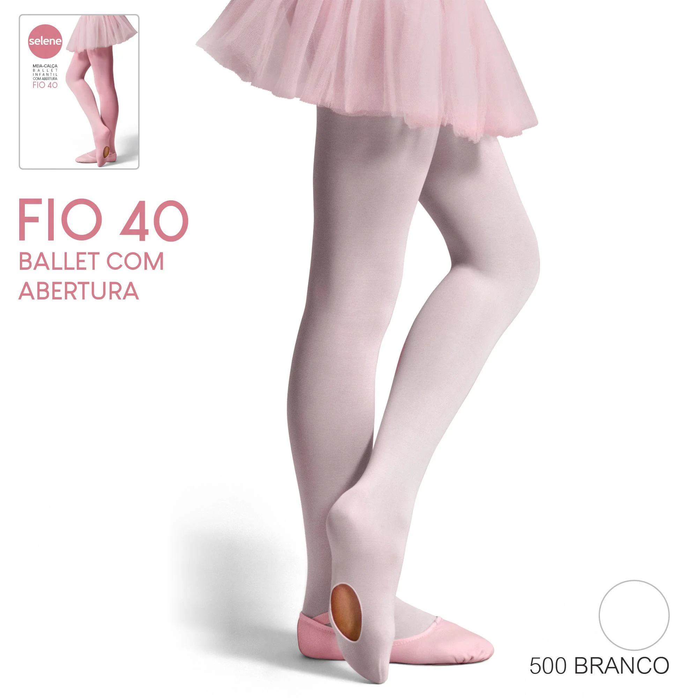
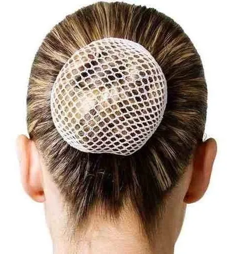

Menu das Lojas
Ballet
Sobre o Ballet
O ballet clássico é uma forma de dança que se originou nas cortes italianas renascentistas do século XV e se desenvolveu na França e na Rússia como uma forma de arte concertada. Caracterizado por movimentos precisos, graciosos e técnicos, o ballet exige disciplina, força e flexibilidade.Saiba Mais!

Sapatilha de ponta
Preço: R$ 250,00
Descrição: Sapatilha de ponta profissional, conhecida pelo seu conforto e durabilidade.
Tamanhos Disponíveis: 36, 37

Meia calça para ballet.
Preço: R$ 174,56
Descrição: Meia calça versátil.
Tamanhos Disponíveis: Infantil, Adulto P

Touca de rendinha para ballet.
Preço: R$ 75,00